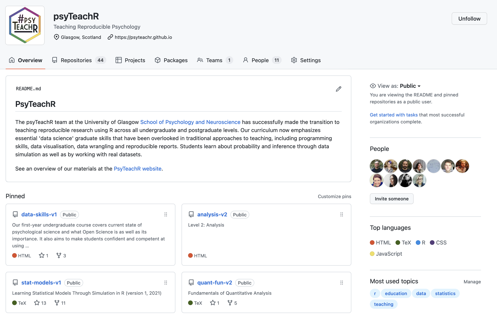
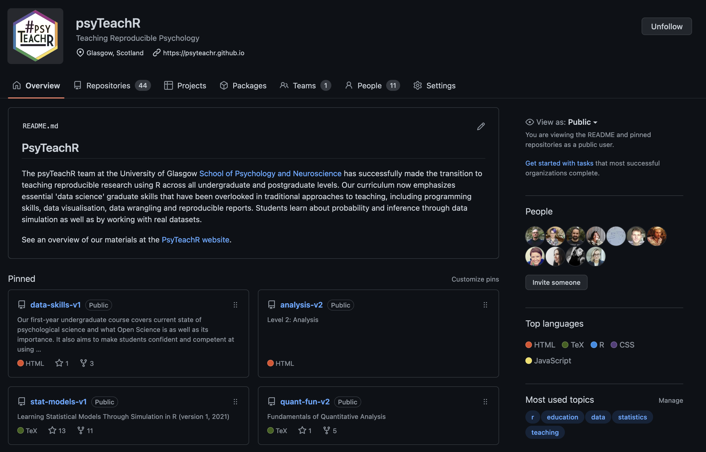

10 Página web
En primer lugar, consulta varias páginas web de otros equipos colaborativos que ya existían y determina el tipo de información que quieres incluir en tu página. Si aún es una etapa temprana de tu organización, es posible que no tengas una estructura tan compleja como la de otras organizaciones.
10.1 Secciones
La mayoría de las páginas web de organizaciones científicas de equipos colaborativos tendrán como mínimo las siguientes secciones.
10.1.1 Propósito/Visión
Informa a la gente cuál es el objetivo de tu grupo. ¿Qué problemas o cuestiones específicas estarán abordando?
10.1.2 Cómo afiliarse
Haz que sea fácil para la gente pueda averiguar cómo unirse a tu organización.
10.1.3 Miembros
¿Quiénes son tus miembros? ¿Cuáles son sus intereses? ¿De dónde vienen y qué tipo de experiencia tienen?
Algunos formatos de blog como Wordpress o Hugo pueden crear una página de miembros automáticamente, siempre que añadas los datos de cada miembro de una manera específica. Vale la pena pensar en estas páginas cuando diseñes tus formularios de afiliación.
10.1.4 Actividades
¿Qué actividades realiza tu grupo? Al principio, es probable que no tengan más que planes, pero piensen en estructurar su página web para que sea fácil añadir nuevos proyectos y resultados.
10.2 Accesibilidad
La accesibilidad es muy importante para una página web. Asegúrate de añadir un texto alternativo descriptivo a cualquier imagen y de utilizar plantillas web que tengan una estructura semántica para personas que leen en pantallas. Las opciones que se describen a continuación son generalmente buenas para la accesibilidad.
10.3 Construcción
Hay muchas, muchas maneras de crear una página web, pero asumiré que si estás mirando esta guía, no tienes mucha experiencia. Las opciones que aparecen a continuación son formas bastante sencillas de crear el sitio web para una organización.
10.3.1 Jeckyll
ManyBabies tiene una página web impulsada por BeautifulJeckyll y alojada en GitHub Pages. Si tienes una cuenta de github, es muy fácil configurar la configuración por defecto y empezar a juguetear.
10.3.2 Hugo
Hugo es un generador de sitios web de código abierto. Si tienes experiencia con R, puedes hacer un sitio web Hugo usando Quarto o Blogdown.
Hugo tiene muchas temáticas para páginas web. Academic es una temática popular con soporte multilingüe. Los sitios de Hugo son buenos si quieres alojar un blog y aprovechar las características que rastrean los temas de las publicaciones y participación.
10.3.3 WordPress
El sitio web de PSA está hecho con WordPress. Esta opción no requiere experiencia en codificación y es más fácil que varias personas la administren. Hay muchas temática para personalizar la página.
Una de las desventajas es que este tipo de páginas web tan dinámicas pueden ser más complejas de alojar, pero puedes empezar con un alojamiento gratuito en WordPress.com.
10.4 Alojamiento
Tu página web tiene que estar alojada en algún sitio. GitHub Pages y Netlify son dos de las mejores opciones gratuitas. Ambas te permiten utilizar un nombre de dominio personalizado o un nombre de dominio como myteam.github.io o myteam.netlify.com.
10.4.1 Github Pages
Es muy sencillo alojar una página web estática de forma gratuita utilizando GitHub Pages. Necesitas haber configurado una organización de GitHub como se describe en Section 9.5 y crear un repositorio llamado yourorgname.github.io para los archivos de la página web.
Un aspecto positivo de GitHub Pages es que cada proyecto puede tener su propio repositorio y una página web en una subsección de la página web principal. Por ejemplo, PsyTeachR tiene un sitio principal en https://psyteachr.github.io/, pero cada libro (por ejemplo, Applied Data Skills o Statistical Models) tiene su propio repositorio y su propio equipo de autores/as.


10.4.2 Netlify
Netlify puede alojar una página web y también tiene plantillas de arranque rápido para configurar un sitio web utilizando Hugo u otros tipos de plantillas.
10.5 Nombre de dominio
Es una buena idea registrar un nombre de dominio para tu grupo, pero no te dejes engañar comprando un nombre caro .com. Ve a Google Domains (o a tu registrador de dominios favorito) y escribe el nombre que vas a utilizar para las redes sociales. Te mostrarán todas las terminaciones de dominio disponibles para ese nombre y sus precios. El dominio .info suele costar unos 10 euros al año, pero hay cientos de opciones (.tires es extrañamente caro).